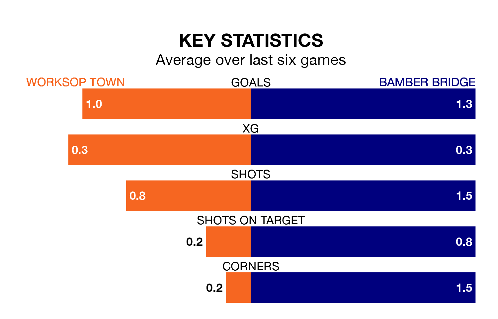

Worksop Town are heavy favourites to keep all three points at home in Saturday's kick-off against Bamber Bridge.
Worksop, who sit fourth in the Northern Premier League with 30 games played, are priced at 1.5 to seal victory at the Windsor Food Service Stadium.
Sitting 11 places and 18 points behind them in the table, Bamber Bridge are 4.9 to win with *Betting Company*, while the draw is at 4.2.
With 58 goals in 30 games so far this season, Worksop are scoring more than average in the league with 1.9 goals per game. And they are conceding fewer than average, letting in 30 goals at a rate of 1.0 per game.
Bamber Bridge, meanwhile, are below average scorers, with 1.6 goals per game, compared to a league average of 1.7. They have conceded 1.9 goals per game.
Town are in mixed form in the Northern Premier League, with two wins and three draws from their last six games.
With a win and a draw over that period, the visitors' form is worse – they have taken four points from 18, compared to the home team's nine.
Worksop's last match was on February 17, a 0-0 draw against Matlock Town.
Bamber Bridge beat Morpeth Town 3-1 last time out, on February 10.
Updated: 10:08 (UTC), 23/02/24